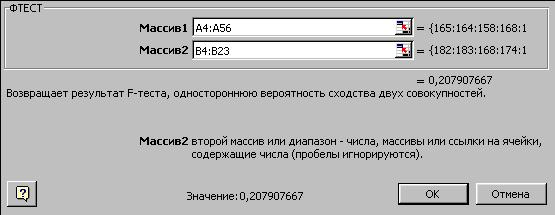

В данном случае вполне достаточен уровень
значимости  =0,05.
=0,05.
Проверка гипотеры о равенстве выборочных дисперсий
Проверка гипотезы о равенстве дисперсий проходит, как обычно, в несколько этапов.
1. Формулируем нулевую гипотезу
Выборочные дисперсии равны; их видимое различие объясняется влиянием случайных факторов.
2. Выбираем уровень значимости
В данном случае вполне достаточен уровень значимости
=0,05.
3. Выбираем критерий
Нулевую гипотезу будем проверять по критерию Фишера.
4. Определяем критическую область
При использовании критерия Фишера критическая область всегда односторонняя.
5. Вычисляем эмпирическое значение критерия Фишера или Р-значение
Используем функцию =ФТЕСТ(), возвращающую Р-значение критерия Фишера:
- Используя Мастер функций, выберите функцию ФТЕСТ из раздела "Статистические".
- Заполните поля аргументов: в аргумент Массив1 введите адрес области с данными первой выборки, в аргумент Массив2 - адрес области с данными второй выборки (см. рис)

- Нажмите кнопку ОК.В ячейке окажется значение 0,207907667375027.
6. Интерпретация результатов
Функция =ФТЕСТ() возвращает Р-значение критерия Фишера значение для двусторонней критической области. Поскольку при проверке гипотезы о равенстве дисперсий по критерию Фишера критическая область должна быть односторонней, полученное Р-значение нужно разделить на 2. Получим:
Р/2=0,103953833687513
Этот результат означает, что нулевую гипотезу о равенстве выборочных дисперсий можно принять на уровне значимости 0,103953833687513 и более высоких уровнях, т.е. при
Т.к. выбранное нами значение
7. Вывод
На выбранном нами уровне значимости 0,05 принимаем нулевую гипотезу. Дисперсии выборок следует считать одинаковыми, а их видимое различие относим за счет влияния случайных факторов.